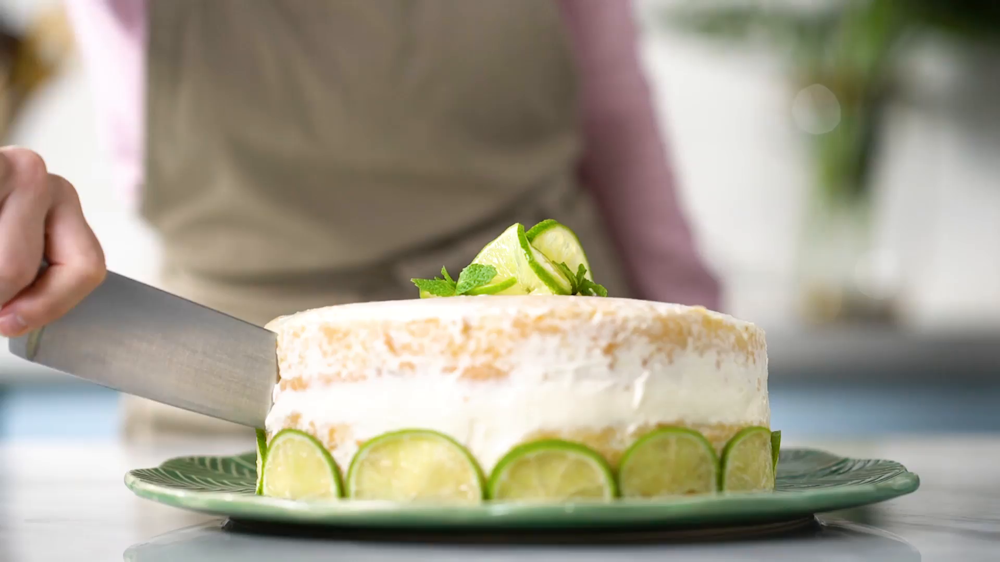

Bolo de Limão

Ingredientes
- 2 xícara de farinha de trigo
- 1 pitada de sal
- 7 gemas
- 2 xícara de açúcar
- ½ xícara de óleo
- 1 xícara de água fervente
- 1 colher de chá de essência de baunilha
- Raspas de 1 limão
- 7 claras
- 3 colheres de chá de fermento químico
- 700g de creme de leite fresco
- 395g (1 lata) de leite condensado
- Suco de 2 limões
- 1 limão cortado em rodelas para decorar
- Folhas de hortelã para decorar
Modo de Preparo
- Misturar a farinha de trigo com o sal. Reservar.
- Bater as gemas com o açúcar e o óleo.
- Adicionar, alternadamente, a água e a farinha de trigo na mistura das gemas.
- Quando estiver bem incorporado, adicionar a essência de baunilha e as raspas de limão.
- Bater a clara em neve.
- Juntar o fermento a mistura e por último as claras em neve, delicadamente.
- Dispor em duas formas redondas untadas e enfarinhadas.
- Levar ao forno preaquecido a 180 graus, durante 40 minutos.
- Em uma tigela, dispor o creme de leite fresco, o leite condensado e o suco de limão. Bater com uma batedeira até obter ponto de chantilly.
- Rechear o bolo com esse chantilly. Passar o excesso de recheio em volta e em cima do bolo.
- Decorar com rodelas de limão e hortelã
Bolo de Cenoura

Ingredientes
- 2 cenouras médias, cortadas em cubos 300 g
- 1/2 xícara de chá de óleo 125 ml
- 3 ovos
- 1 1/2 xícara de chá de farinha de trigo 210 g
- 1/2 xícara de chá de Amido de Milho Maizena Vita + 60 g
- 2 colheres de chá de fermento em pó 8 g
- 1 xícara de chá de açúcar 190 g
- 1/2 xícara de chocolate ao leite derretido
- 1/2 xícara de creme de leite
Modo de Preparo
- Pré-aqueça o forno em temperatura média (180°C).
- Unte e enfarinhe uma forma de furo central média (20 cm de diâmetro). Reserve.
- No copo do liquidificador, coloque a cenoura, o óleo e os ovos, e bata até ficar homogêneo.
- Em uma tigela, peneire o amido de milho MAIZENA®, a farinha de trigo, o fermento e o açúcar, junte a mistura de cenoura reservada, e mexa com o auxílio de uma espátula até que vire uma massa uniforme.
- Disponha a massa na forma reservada e leve ao forno por 40 minutos, ou até que um palito, depois de espetado na massa, saia limpo. Retire o forno e deixe amornar.
- Faça a cobertura: misture o chocolate e o creme de leite, e espalhe por toda a superfície do bolo. Sirva a seguir.
Não existem resultados para a sua pesquisa :(